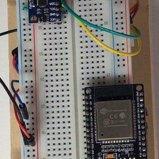
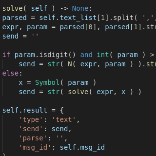

Wh I am
I was born in 1997 in Milan and since the age of 3 I was fascinated by computers.
In my teens I attended a Scientific Lyceum to satisfy my growing interest in math.
Once I graduated from high school, in the year 2016, I immediatly decided to enroll in a
Computer Science university degree. The best choice of my life. There I learnt
how to understand machines, how to solve problems, and how to program.
A year later I also started an apprenticeship as a Systems Analyst, that
after 3 years converted in a real job I still am busy with. I help my company in choosing
technologies, testing and programming, for clients or for our business itself.
How I wrk
-
> Interests
- Information & Data
- AI/ML/NN/DL
- Data Analysis
- Data Science
- Data Visualization
- Information Security
- Code theory
- Cryptanalysis
- Cryptography
- White-box and Black-box Testing
- Other interests
- Computer Graphics
- Embedded Systems
- Mathematical Logic
- Operations Research
-
> Technologies 異
- Languages
- Bash
- C
- HTML/CSS/JavaScript
- Java
- LaTeX
- Lua
- MIPS & x86 Assembly
- Python
- Rust
- SQL
- Technologies
- Arduino & ESP
- IntelliJ IDEA
- PostgreSQL
- Unix
- Visual Studio Code
- Web API
What do

> archetipico.github.io
I wanted to learn HTML/CSS/JavaScript so I decided to build my own website starting from nothing.
And yes, that's the website you're using right now!

> Circuital Caesar Cipher
This is the project I realized during my Computer Architecture I university course.
It's entirely made in Logisim and it's an actual conversion of a C program into Boolean logic.

> eMerger
Started as a joke among friends, now an useful toolkit for UNIX systems.
Completely made in Shell.
Once installed you only have to type `up` to update everything that can be updated.

> Libramentum 1.0
A university project I built while I attended the Embedded Systems course.
A self-balancing plane entirely made in C++, able to send continuous status informations on a MQTT server.

> Open Data Analysis
Another university project, but this time realized during my Scientific Visualization course.
In a team of 3, I developed a presentation about Milan air pollution, using only Open Data.
The whole project was created using Python, Java, PostgreSQL and D3.js.
Several Statistics notions and basic Machine Learning let us have correct deductions.

> TelegramBot
My Telegram Bot, entirely made in Python.
It can tell you the weather, compile regexs, create a palette of colors from an image and more!

> WallpaperEnhancer
Windows 10 doesn't let you change your wallpaper based on time.
This little script in Python and VBScript will do the job.